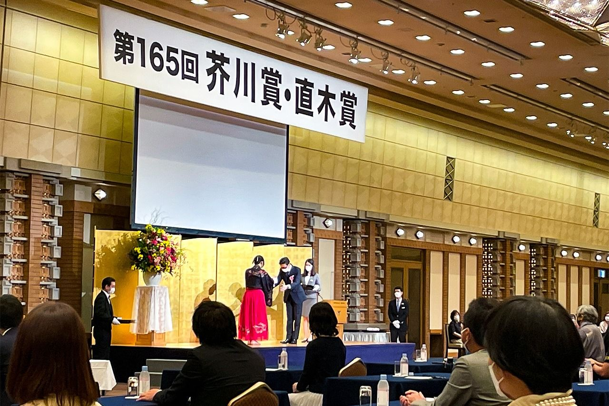

Sự thật thú vị

Năm 1935, một người bạn của Akutagawa Ryuunosuke, nhà văn kiêm chủ xuất bản tạp chí Shinshichō tên là Kikuchi Kan (1888-1948), đã sáng lập ra giải thưởng văn học thường niên mang tên Akutagawa Ryuunosuke trao cho các nhà văn trẻ tuổi sáng tác được những tác phẩm có giá trị văn học cao. Giải thưởng mang tên ông từ hơn 50 năm nay vẫn là một danh dự tối cao đối với người cầm bút Nhật Bản.